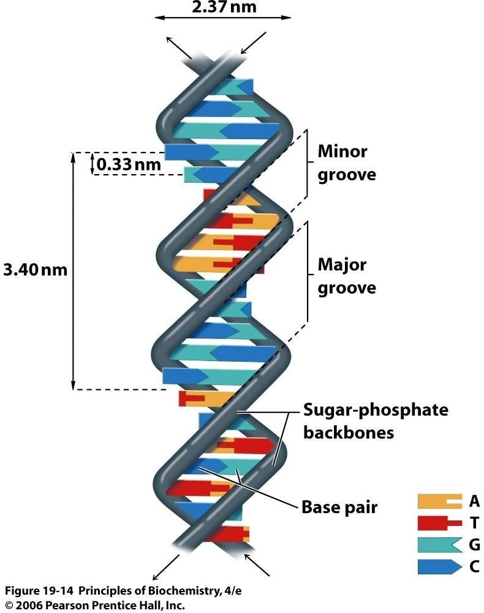

BIO103 · 第 8 章
核酸的结构与功能
Nucleic Acid Structure & Function
虚线下划线为术语；悬停查看中文、英文与释义，完整词典见“术语”。
本章目录
本讲从中心法则出发，先讲核酸的组成单位与一级结构，再讲 DNA 的双螺旋、变性与高级结构，最后转到 RNA 的类型、结构与调控功能。
本章要点
- 中心法则描述 DNA → RNA → 蛋白质的信息流；核酸与多糖、多肽一样，是单体聚合而成的大分子。
- 核苷酸由含氮碱基、戊糖与磷酸组成；核苷是碱基与糖，缺少磷酸。
- 单链多核苷酸有游离的 5′-端与 3′-端，一级结构按 5′→3′ 阅读；这也是 DNA 与 RNA 的合成方向。
- Chargaff 规则：%A = %T，%G = %C；DNA 中还有 5-甲基胞嘧啶与 6-甲基腺嘌呤等修饰碱基。
- B 型 DNA 为反平行右手双螺旋，直径约 2 nm，每圈 10 bp，螺距 34 Å。
- 变性使 260 nm 吸光增加（增色效应），Tm 是熔解曲线的拐点；G/C 含量越高，Tm 越高。
- 超螺旋是 DNA 的三级结构，由拓扑异构酶控制；核小体是染色质包装的基本单位。
- RNA 多为单链但可自身折叠；tRNA、rRNA、mRNA、snRNA、snoRNA、miRNA、siRNA 分工不同。
8.1 中心法则与四类生物大分子
中心法则central dogma由 Francis Crick 于 1958 年提出，1970 年在 Nature 上重述。它描述遗传信息的基本流向：DNA → RNA → 蛋白质，最终决定表型（phenotype）。DNA 与 RNA 都是核酸，基因是这段信息流中可被传递的功能单位。
所有生物的大分子只归为四类：糖类、脂质、蛋白质与核酸。在分子尺度上，糖类、蛋白质与核酸体积巨大，称为大分子macromolecules。它们是链状分子，即聚合物polymer：由许多相似或相同的构件以共价键连接而成的长分子；这些重复构件是较小的单体monomer。
| 聚合物 | 单体 |
|---|---|
| 糖类（多糖） | 单糖 |
| 蛋白质（多肽） | 氨基酸 |
| 核酸 | 核苷酸 |
核酸分两类：DNAdeoxyribonucleic acid（脱氧核糖核酸）与 RNAribonucleic acid（核糖核酸）；两者都是核苷酸的聚合物，差别在戊糖与碱基上。
L10 p.5–6, p.9
8.2 核苷酸的组成与水解
用强酸水解 DNA 或 RNA，可得到三个组分：含氮碱基nitrogenous base（共 5 种）、糖与磷酸。用温和的酸水解，则只断开糖与磷酸之间的键，得到两个层级的分子：
- 核苷nucleoside = 碱基 + 糖。
- 核苷酸nucleotide = 碱基 + 糖 + 磷酸。
两类核酸的碱基与糖不同：RNA 用尿嘧啶uracil（U），DNA 用胸腺嘧啶thymine（T）；RNA 的戊糖是核糖ribose，DNA 的是脱氧核糖deoxyribose。两者都是五碳糖pentose，区别只在 2′ 位是否有羟基。
这一区别不只是命名问题：RNA 与 DNA 在化学性质上的差异，使两者在细胞中承担不同的角色——RNA 适合作为短期的信息载体与催化分子，DNA 适合长期储存遗传信息。
L10 p.10, p.16
8.3 碱基环的编号与糖苷键
碱基分嘌呤purine与嘧啶pyrimidine两类。嘌呤是双环，编号时先六元环、后五元环，并使氮原子取得尽可能小的编号；嘧啶只有一个六元环，编号较直接，同样让氮原子编号最小。
碱基与糖通过糖苷键glycosidic bond相连：嘌呤以 N9 连接糖的 C1′，嘧啶以 N1 连接糖的 C1′。这个连接点决定了碱基相对于糖的朝向，也是核酸骨架形成的前提。
碱基上的酮基keto (carbonyl)与氨基amino是形成氢键的位点：酮基提供受体，氨基提供供体。A 与 T（或 U）、G 与 C 之所以能专一配对，靠的正是这些基团在空间上的排布。糖的 3′ 位与 5′ 位分别携带羟基与磷酸，是核苷酸之间连接成链的两个接口，因此讲义特别强调 3′ 与 5′ 位对理解结构与功能至关重要。
L10 p.12–13, p.16–17
8.4 一级结构：5′→3′ 极性
单链多核苷酸有一个游离的 5′-端5′-end和一个游离的 3′-端3′-end，两端化学性质不同，因此链具有极性（polarity）。通常 5′-端带一个磷酸基团，3′-端不带。
一级结构primary structure就是从 5′-端读到 3′-端的线性碱基序列。例如一段四核苷酸写作 5′-AGTC-3′，更精确的写法是 5′-pdApdGpdTpdC-3′（p 表示磷酸，d 表示脱氧）。
约定俗成：DNA 或 RNA 序列一律把 5′-端写在左边、3′-端写在右边。这个约定不是形式问题，而是后续所有机制的基础：
- DNA 与 RNA 的合成方向都是 5′→3′。
- 读 DNA 序列时，必须先确定哪一端是 5′，才能判断模板链与编码链。
- 翻译时核糖体沿 mRNA 也是从 5′ 向 3′ 阅读密码子。
L10 p.18–19
8.5 碱基组成：Chargaff 规则与修饰碱基
Chargaff 规则Chargaff’s rule指出：在双链 DNA 中，%A = %T，%G = %C。这条规则反映的是碱基配对的数量关系，而不是序列信息——它不能告诉你任何一段 DNA 的排列顺序。
除 A、T、G、C 四种主要碱基外，DNA 中还含有少量修饰碱基：
- 5-甲基胞嘧啶5-methylcytosine（5-MeC）：原核与真核都有，植物中含量特别高。
- 6-甲基腺嘌呤6-methyladenine：见于原核生物。
这些甲基化碱基不改变配对规则，但会改变 DNA 与蛋白质的相互作用，并在后续的错配修复中被用作“亲代链”的标记。
L10 p.20
8.6 双螺旋：二级结构与碱基配对的意义
DNA 的二级结构secondary structure是两条反平行（antiparallel）的多核苷酸链以右手方式缠绕成的双螺旋：一条链 5′→3′ 向上，另一条 5′→3′ 向下。螺旋直径约 20 Å（2 nm）；糖-磷酸骨架绕在外侧，碱基朝向内部，骨架的走向形成大沟major groove与小沟minor groove。
螺旋的几何参数需要记住：每圈 10 个碱基对（bp），每个 bp 使螺旋扭转 36°；碱基的范德华厚度为 3.4 Å 且彼此部分堆叠，因此螺距（每圈上升）为 34 Å。

Clean vector scientific diagram of a B-DNA double helix: two antiparallel sugar-phosphate backbones winding right-handed around the outside, base pairs stacked inside, major and minor grooves labeled, and an inset showing A paired with T and G paired with C. Flat 2D, thin 1.5 px strokes, muted slate blue and warm grey palette, white background, English labels, no cartoon, no gradient, no shadow, no 3D perspective.
这种结构的生物学意义有四层：
- 互补配对使每条链都携带全部遗传信息的备份，一条链受损或丢失时仍可参照另一条恢复。
- 规则的螺旋与信息冗余使 DNA 非常适合长期储存遗传信息。
- 碱基配对是 DNA 聚合酶复制 DNA、RNA 聚合酶转录 RNA 的共同机制基础：进入的核苷酸按模板选择配对。
- 许多 DNA 结合蛋白能识别大沟中特定的碱基配对模式，从而定位到基因的调控区。
L10 p.21–23
8.7 紫外吸收、变性与 Tm
在 pH 7.0 下，双链 DNA 的紫外吸收峰在 260 nm 附近。碱基从堆叠状态变为暴露状态时，吸收会增强，因此变性 DNA 比双链 DNA 多吸收 12%–40% 的紫外光，这一现象称为增色效应hyperchromic effect。蛋白质的强吸收峰在 280 nm，可用来区分核酸与蛋白污染。
把 DNA 溶液逐渐升温，260 nm 的吸收随温度上升而增加，得到一条 S 形（sigmoidal）的熔解曲线。熔解温度melting point (Tm)就是曲线的拐点：此刻吸光的增量恰好等于完全变性时总增量的一半。
poly(AT) 的 Tm 低于天然 DNA，也低于 poly(GC)。原因是 G/C 碱基对之间的堆叠作用更强，打断它们需要更多能量；因此 G/C 含量越高的 DNA，Tm 越高。
Clean vector line graph of a DNA melting curve: x-axis temperature in degrees Celsius, y-axis absorbance at 260 nm, a sigmoidal curve rising from a low plateau to a high plateau, with a dashed horizontal line at half the total absorbance increase and a vertical dashed line marking the inflection point labeled Tm. Flat 2D, thin 1.5 px strokes, muted slate blue and warm grey palette, white background, English labels, no cartoon, no gradient, no shadow.
L10 p.24–25
8.8 三级结构：超螺旋、拓扑异构酶与核酸酶
自然界中的 DNA 几乎都是双链：真核染色体 DNA 为线状，原核染色体 DNA 为环状；少数病毒的 DNA 是单链，可呈线状或环状。
DNA 还有三级结构tertiary structure，即超螺旋supercoiling（超螺旋性，superhelicity）。若把双螺旋想象成一根绳，向一个方向拧紧产生正超螺旋（positive supercoiling），向相反方向拧松则产生负超螺旋（negative supercoiling）。在核苷酸数目相同时，超螺旋分子比松弛（relaxed）分子更紧凑，这对把 DNA 装进细胞具有重要意义。
DNA 只有在正确的拓扑状态topological state下才能正常发挥功能，而超螺旋由一类称为拓扑异构酶topoisomerase的酶控制：它们通过切断并重新连接 DNA 骨架来改变连环数，使超螺旋程度可以被调节。
研究拓扑状态与序列需要工具酶。核酸酶按作用位置分两类：
- 外切酶exonuclease作用于多核苷酸的一个游离端，逐个切开下一个磷酸二酯键。
- 内切酶endonuclease切开内部的磷酸二酯键，且只在特定序列处作用。
两种切割都产生 5′-磷酸与 3′-羟基末端。DNA 与 RNA 都是核酸酶的底物，分别对应 DNasedeoxyribonuclease 与 RNaseribonuclease。
L10 p.26–27, p.31–32
8.9 核小体与染色体包装
真核染色体 DNA 在核内以 DNA-蛋白质复合体形式存在，即染色质chromatin，其中的蛋白质主要是组蛋白histones。包装的基本单位是核小体nucleosome。
每个核小体由核心颗粒（core particle）、组蛋白 H1 与连接 DNA（linker DNA）组成。核心颗粒含一个组蛋白八聚体与约 146 bp 的 DNA；连接 DNA 约 54 bp。H1 同时结合核心颗粒与连接 DNA，帮助稳定染色质结构。

Clean vector scientific diagram of a nucleosome: a histone octamer core with about 146 bp of DNA wrapped around it in 1.7 turns, linker DNA of about 54 bp continuing to the next nucleosome, and histone H1 drawn as a small wedge binding the core particle and the linker DNA. Flat 2D, thin 1.5 px strokes, muted slate blue and warm grey palette, white background, English labels with base-pair numbers, no cartoon, no gradient, no shadow.
包装的效果非常显著：每个 DNA 分子最终被装成一条染色体，长度比其伸展状态短约 50000 倍。作为尺度参照，人类基因组共 23 条染色体，约 3.2 亿个碱基对长，含 20000–25000 个不同的蛋白编码基因。
L10 p.28–30
8.10 RNA 的结构与类型
RNA 通常是单链的，但链内存在自身互补区，可通过 Watson-Crick 配对以及非经典配对（如碱基三联体，base-triples）形成茎环stem loop与发夹（hairpin）等二级结构。这种折叠使 RNA 能形成独特的三维形状，功能上类似球状蛋白：为化学反应提供局部环境，并能与蛋白质、核酸和小分子配体专一结合。
tRNA 是最典型的折叠例子：成熟的 tRNA 呈 L 形，acceptor 臂与 T 臂构成一条腿，D 臂与 anticodon 臂构成另一条腿；反密码子与氨基酸接受位点位于分子的两端。三个环各有分工：T 环被核糖体识别，D 环与氨酰-tRNA 合成酶的识别有关，反密码子环与 mRNA 的密码子配对。
RNA 还能与核酸互补配对、与蛋白质组装成核糖核蛋白ribonucleoprotein (RNP)颗粒，参与转录与翻译；也可作为逆转录的模板，或本身具有催化活性，称为核酶ribozyme（可聚合核苷酸、连接 DNA、切割 DNA 磷酸二酯键、合成肽）。
Clean vector scientific diagram of tRNA shown twice: on the left the cloverleaf secondary structure with acceptor stem, D loop, anticodon loop and T loop labeled; on the right the same molecule folded into an L shape with the amino acid attachment site at one end and the anticodon at the other end. Flat 2D, thin 1.5 px strokes, muted slate blue and warm grey palette, white background, English labels, no cartoon, no gradient, no shadow.
| 类型 | 特点 | 功能 |
|---|---|---|
| tRNA | 60–95 nt（18–28 kDa），多数约 76 nt | 携带氨基酸，靠反密码子与密码子配对 |
| mRNA | 携带蛋白编码信息 | 规定蛋白质的氨基酸序列 |
| rRNA | 核糖体的必需组分 | 与 tRNA 合计占总 RNA 的 90% 以上 |
| snRNA | 小核 RNA | 参与 pre-mRNA 剪接 |
| snoRNA | 小核仁 RNA | 参与 rRNA 加工与修饰 |
| miRNA | 非编码，约 22 nt 的调控 RNA | 与靶 mRNA 互补，引起降解或翻译抑制 |
L10 p.34–38
8.11 miRNA、siRNA 与 RNA 干扰
微小 RNAmicroRNA (miRNA)是一类小的非编码 RNA，最初以约 72 bp 的发夹转录本形式产生；人类约有 1600 个 miRNA。它们被加工成约 22 bp 的双链小干扰 RNA 样分子，进入 RNA 干扰通路。
小干扰 RNAsmall interfering RNA (siRNA)调控具有选择性，而 miRNA 可调控全部蛋白编码基因的一半以上：一个 miRNA 能调控多个蛋白，一个蛋白也能被多个 miRNA 调控。两者都由 RNase III 样的 Dicer 加工，再装入RNA 诱导沉默复合体RNA-induced silencing complex (RISC)，通过两种转录后机制下调表达：切割靶 mRNA，或抑制翻译。
Clean vector pathway diagram of microRNA processing: a hairpin primary transcript in the nucleus, exported to the cytoplasm, cleaved by Dicer into a short double-stranded RNA about 22 bp, one strand loaded into the RISC complex, then RISC binding a target mRNA and leading either to mRNA cleavage or to translational repression, drawn as two diverging branches. Flat 2D, thin 1.5 px strokes, muted slate blue and warm grey palette, white background, English labels, no cartoon, no gradient, no shadow.
RNA 参与的过程不止翻译。讲义列出的还包括：DNA 复制、RNA 加工、mRNA 周转（intracellular 降解速率，以半衰期表示）、蛋白质合成与蛋白质靶向。从演化角度看，RNA 世界RNA world假说认为 RNA 同时充当信息载体与催化剂，随后才过渡到今天的 DNA/RNA/蛋白质世界；这一过渡的关键一步是 RNA 逆转录为 DNA。
L10 p.39–44